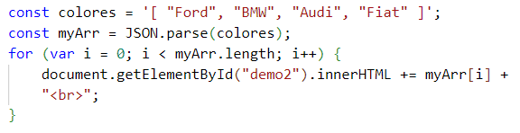

Un uso habitual de JSON es el intercambio de datos desde/hacia un servidor
Cuando recibimos datos desde un servidor es siempre tipo cadena
JSON.parse() es un método en JavaScript que se utiliza para analizar (parsear) una cadena JSON y convertirla en un objeto JavaScript
Ejemplo:

Cuando los datos de JSON son una matriz, el metodo JSON.parse() devuelve una matriz de JavaScript y la podemos trabajar como tal
Ejemplo:
